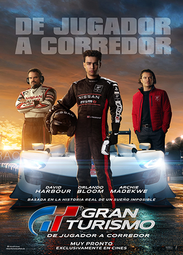
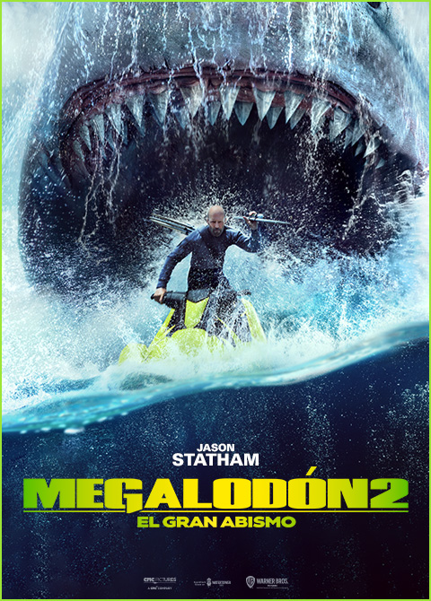
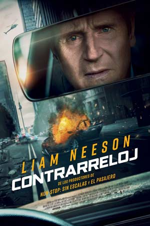

ESTRENOS/CARTELERA
| Escarabajo Azul | Gran Turismo | Megalodon 2: El Gran Abismo | OpenHeimer | Elementos |
|---|---|---|---|---|
 |
 |  |  |
 |
|
Jaime Reyes se encuentra en posesión de una antigua reliquia de biotecnología alienígena llamada Escarabajo. Cuando el Escarabajo elige a Jaime como huésped simbiótico, le otorga una armadura con poderes extraordinarios e impredecibles. |
El joven Jann Mardenborough gana una serie de competiciones de videojuegos Gran Turismo organizadas por una importante empresa automovilística y obtiene la oportunidad de convertirse en piloto de carreras profesional. |
Jonas Taylor lidera un equipo de investigación en las profundidades del océano. Acorralados por colosales tiburones prehistóricos y despiadados bandidos, los científicos intentan sobrevivir a toda costa. |
Durante la Segunda Guerra Mundial, el teniente general Leslie Groves designa al físico J. Robert Oppenheimer para un grupo de trabajo que está desarrollando el Proyecto Manhattan, cuyo objetivo consiste en fabricar la primera bomba atómica. |
En una ciudad en la que los elementos de fuego, agua, tierra y aire viven en distritos separados, una chica
de fuego y un chico de agua descubren que, aunque la sociedad les diga lo contrario, tienen muchas cosas en
común. |
PREVENTA
| Cachorros Espaciales | Contrareloj | Una Asmistad Para Siempre | Trolls 3 | El Justiciero |
|---|---|---|---|---|
 |
 |  |
 |
 |
|
Dos niños pequeños y sus padres ayudan a un trío de extraterrestres transformados en perros amigables a escapar de las garras de un cazador de ovnis local mientras reparan su nave espacial. |
Matt Truner (Liam Neeson), un ejecutivo bancario, recibe una amenaza de bomba mientras conduce a sus hijos a la escuela. Su pasado inescrupuloso ha vuelto para cobrar venganza y ahora ha puesto a sus hijos en peligro. Si se detienen, si no siguen las instrucciones o si alguno de ellos sale del auto, este explotará. |
Basada en una increíble historia real. Una perra llamada Palma, de raza pastor alemán, es abandonada por su dueño en el aeropuerto de la ciudad. Siempre cuando un avión aterrizaba en el aeropuerto PALMA estaba allí al pie de la escalinata esperando a que su dueño regrese por ella. |
Este año, prepárate para un reencuentro familiar llena de acción, estrellas y colores como ninguna otra, ya que Anna Kendrick y Justin Timberlake regresan para el nuevo capítulo de la exitosa franquicia musical de DreamWorks Animation: Trolls 3: Se armó la banda. |
Desde que dejó atrás su vida como asesino del gobierno, Robert McCall (Denzel Washington) ha tenido dificultades para reconciliarse con las cosas horribles que ha hecho en el pasado, y encuentra un extraño consuelo en hacer justicia a nombre de los oprimidos. |